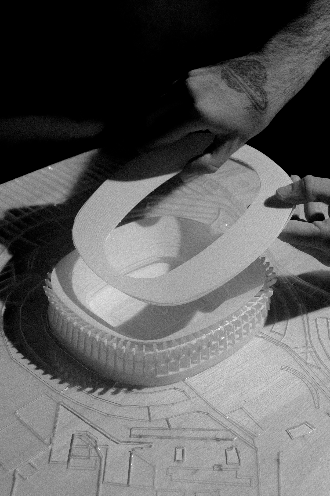
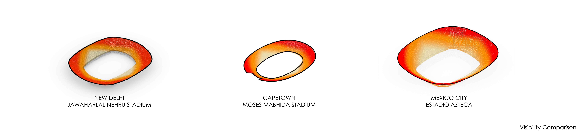
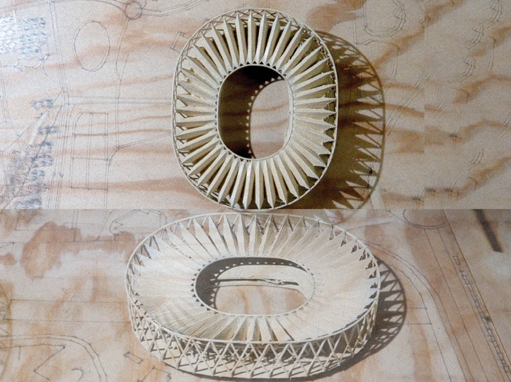
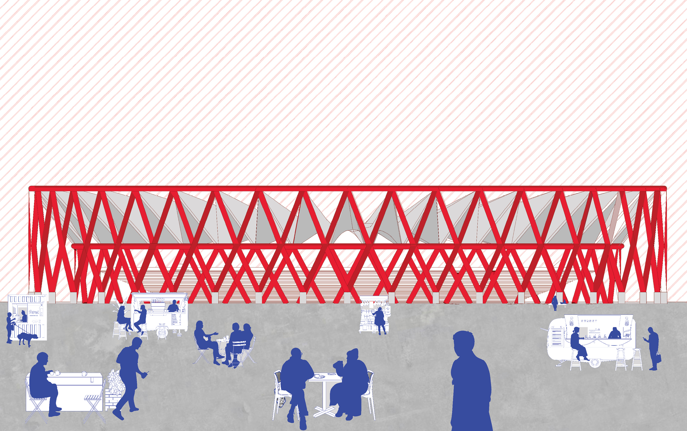

This study explores the power of parametric design to model 3 existing stadiums, implementing a SHARED algorithmic logic based on the control of geometric data inputs that establish rules and relationships, while also tackling the idiosynchracies of each collosal structure.

Estadio Azteca, now Estadio Banorte. In collaboration with Emilio Lopez

Jawaharlal Nehru Stadium. In collaboration with Kayla Duong

Project Brief
Stadia: Parametric Modeling explores stadium design through rule-based digital workflows and iterative geometric systems. The project investigates relationships between stadium form, seating geometry, circulation, structural logic, and envelope development through parametric modeling. Rather than treating these elements as isolated design decisions, the workflow establishes interconnected variables that allow multiple architectural configurations to be generated, evaluated, and refined.